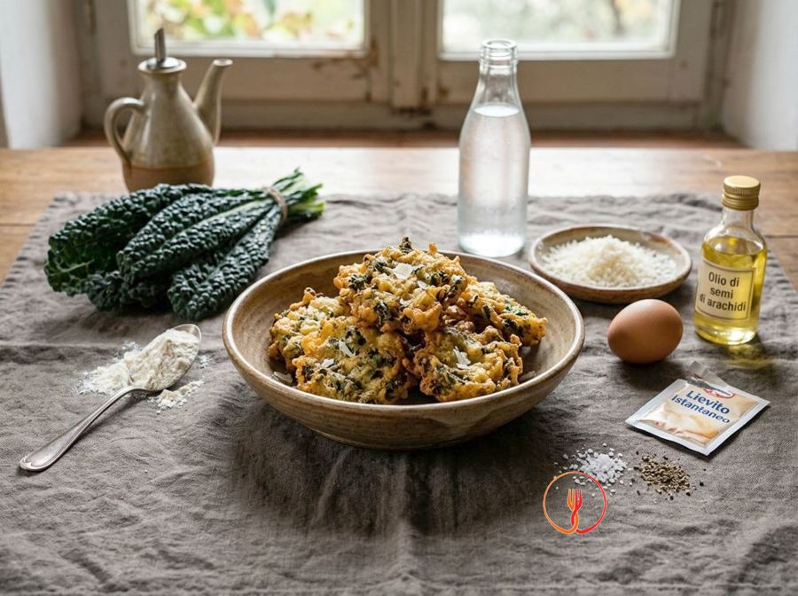

Frittelle croccanti di cavolo nero e pecorino
Sfiziose frittelle dorate dove il cavolo nero incontra la sapidità del pecorino in una pastella leggera e croccante.
Ingredienti
- Cavolo nero (pulito)250 gr
- Farina 00150 gr
- Acqua gassata fredda200 ml
- Pecorino romano grattugiato50 gr
- Uova1
- Lievito istantaneo per torte salate5 gr
- Olio di semi di arachidi per friggere500 ml
- Sale e pepeq.b.
Allergeni
Glutine, Latte, Uova
Può contenere tracce di: Arachidi.
Procedimento
- Lavate il cavolo nero, eliminate la costa centrale dura e tagliate le foglie a striscioline sottili.
- Sbollentate le striscioline in acqua salata per soli 2 minuti, scolatele e strizzatele benissimo per eliminare tutta l'acqua.
- In una ciotola, setacciate la farina e il lievito, quindi aggiungete l'uovo leggermente battuto.
- Versate l'acqua gassata fredda a filo, mescolando con una frusta per evitare grumi fino a ottenere una pastella fluida.
- Aggiungete il pecorino grattugiato, un pizzico di pepe e il cavolo nero ben asciutto alla pastella.
- Scaldate l'olio di semi in una padella profonda fino a raggiungere i 170-180°C.
- Prelevate il composto a cucchiaiate e tuffatelo delicatamente nell'olio caldo.
- Friggete poche frittelle alla volta per circa 3 minuti, girandole finché non risultano gonfie e dorate.
- Scolate le frittelle su carta assorbente per eliminare l'olio in eccesso.
- Servite immediatamente ben calde con un pizzico di sale in superficie.
Valori nutrizionali (stima)
| Per porzione (130 g) | Per 100 g | |
|---|---|---|
| Energia | 1368 kJ / 327 kcal | 1050 kJ / 251 kcal |
| Proteine | 11 g | 8.5 g |
| Carboidrati | 30 g | 23 g |
| di cui zuccheri | 0.8 g | 0.6 g |
| Grassi | 18 g | 14 g |
| di cui saturi | 5.1 g | 3.9 g |
| Fibre | 3.6 g | 2.8 g |
| Sale | 1.0 g | 0.8 g |
Valori stimati con l'AI su dati medi CREA / USDA: sono indicativi e non sostituiscono il parere di un medico o di un nutrizionista.
Apri la ricetta nell'app per la lista della spesa, le schede ingredienti e i negozi vicini.